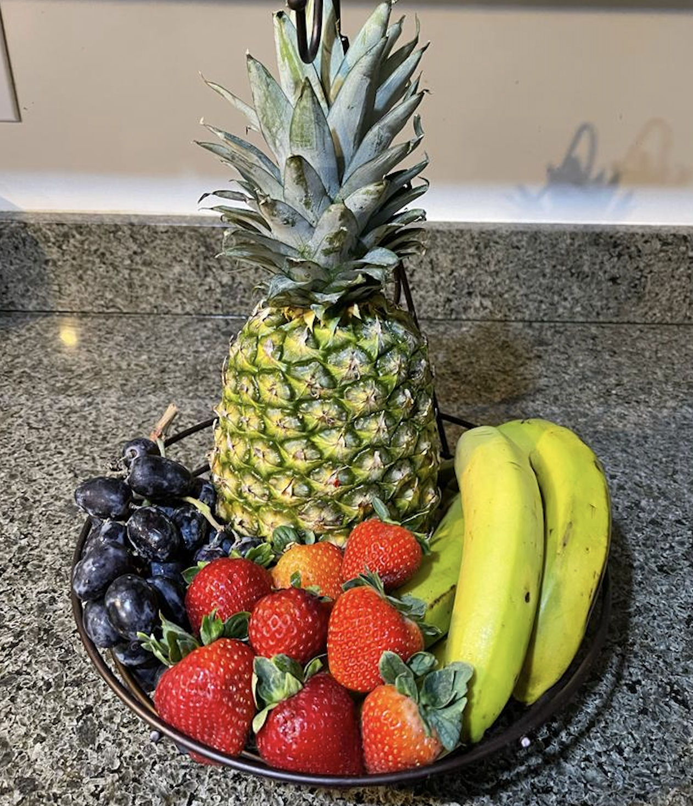
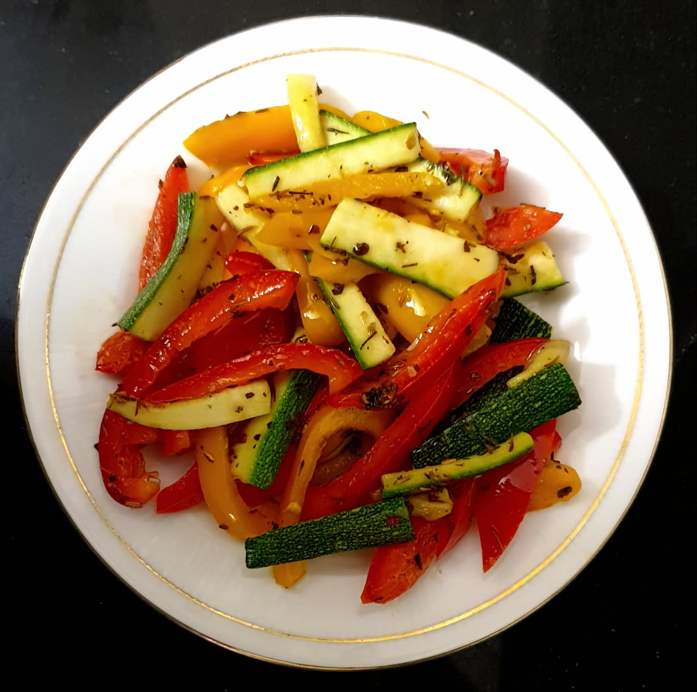
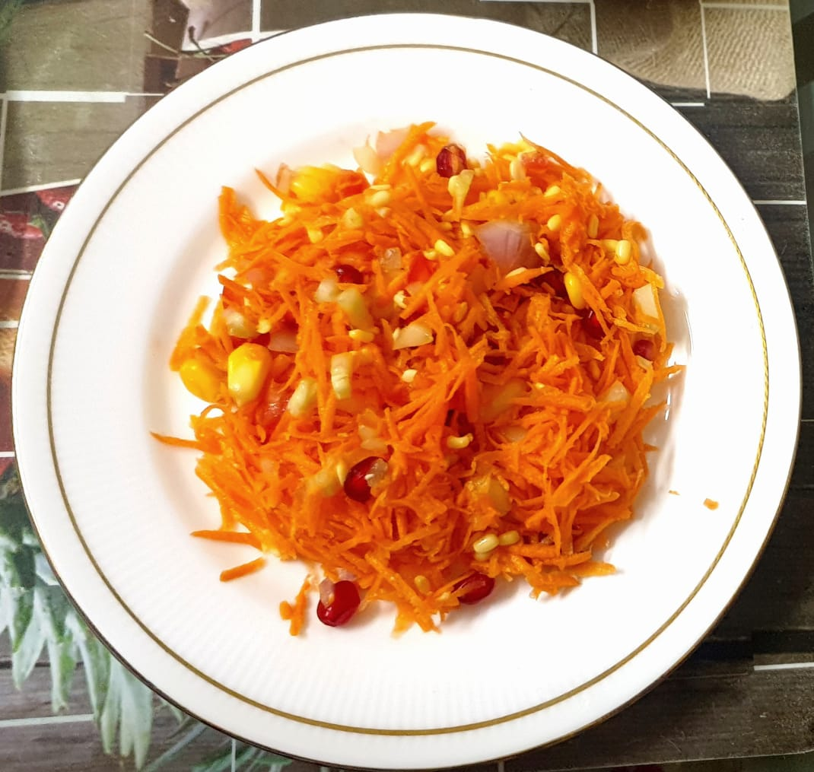
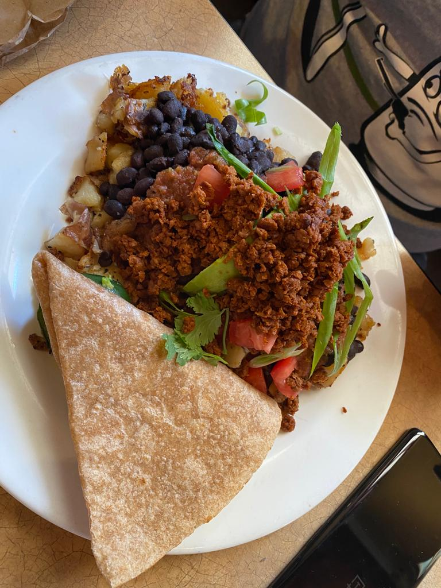

Where Eating Is Replaced By Dieting

People on diet or any comman man thinks opting fruit juice is right approach. Fruits have fiber that improved gut health.When juiced the fruit tend to loose its fiber.Fruit fiber is slowly digested and juice spikes your sugar and digested very quickly. Fruit has fructose,vitamins and minerals. But when you juice it looses its nutrients and rises blood sugar more quickly.

Celebrate end of your summer with my new Zuccini recipe. Try adding grated zuccini along with the bellpepper and any other vegetables of your choice. It contains beneficial nutrients that includes Vitamin C and Vitamin A. It decreases the risk of heart stroke by reducing blood pressure and also lowers cholestrol. You cn achieve maximum benifit by adding salads or raw zuccini along with the skin.

Whatever it is it comes to fixing your health. So instead of focusing on what not to do lets focus on what we can do. In the modern age evryone is tend to become consious and we always try to chose healthy options. Do try this awsome recipe.

Having lunch provides energy and nutrients to keep your body and mind working. It also provides nourishment and energy to your body. Having healthy lunch also helps in regulating blood sugar.
Eat a breakfast comprising proteins since they stabilize you blood sugar and keep you going.